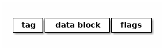
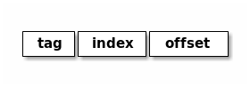

Notes on OS lectures given by Jan Malakhovski, 4th term, 2015
Содержание
- 1. Legend
- 2. Sources
- 3. 2 Ticket 1 RAM
- 3.1. RAM, SRAM, DRAM
- 3.2. Структурно-операционная схема обычной планки памяти (DDR)
- 3.3. Кеши CPU: L1, L2, L3
- 3.4. Схема параллельного извлечения
- 3.5. Извлечение демультиплексором
- 3.6. Ассоциативность
- 3.7. TLB
- 3.8. Общее влияние кеша на работу с памятью
- 3.9. Кеши в мультипроцессорных системах и когерентность кешей
- 4. 2 Ticket 2 CPU pipeline
- 5. 2 Ticket 3 Virtual memory
- 6. 1 Ticket 4 Maps
- 7. 0 Ticket 5 Processes
- 7.1. Процессы и треды
- 7.2. init, родители, дети, зомби
- 7.3. Треды, группы тредов, процессы, группы процессов, сессии
- 7.4. Системные вызовы fork, clone, exec, wait
- 7.5. Интерфейс bash
- 7.6. Реализация переключения контекстов процессов: структуры данных ядра, состояния процессов, различные методы реализации CPS-преобразования.
- 8. 2 Ticket 6 FS 0
- 9. 1 Ticket 7 Drivers/ints
- 9.1. 2 Драйвера устройств в пространстве ядра
- 9.2. 2 Прерывания
- 9.3. 2 Монолитная обработка прерываний
- 9.4. 2 Hi/Lo прерывания
- 9.5. 2 Polling
- 9.6. X Драйвера как контексты исполнения и их отличия от процессов
- 9.7. 2 Реализация драйверов: структуры данных ядра
- 9.8. X Различные методы реализации CPS-преобразования
- 10. 2 Ticket 8 FS 2
- 10.1. 1 Файловые системы
- 10.2. 2 Структура данных inode
- 10.3. 2 VFS
- 10.4. 1 Структуры данных: FSObject, Namespace
- 10.5. 2 Path resolution
- 10.6. 2 Операции над namespace: mount, bind mount, move mount, chroot, pivotroot
- 10.7. 3 Linux FUSE
- 10.8. 0 ФС как функция inodeno -> inode
- 10.9. 1 Структуры ядра: файловый дескриптор (на устройство, файл, директорию), различные кэши, mmaping файлов.
- 10.10. 1 Кеши, mmapping
- 11. 2 Ticket 9 Users/access
- 11.1. 2 Пользователи и права
- 11.2. 2 Модели прав доступа к объектам: дискретная и ролевая
- 11.3. 2 Права на объекты файловой системы
- 11.4. 1 Пользователи и группы с точки зрения ядра
- 11.5. 1 Пользователи и группы с точки зрения пространства пользователя
- 11.6. 1 Системные вызовы setuid, setgid и товарищи
- 11.7. 1 setuid bit
- 11.8. PAM
- 11.9. /etc/passwd, /etc/shadow, /etc/group
- 11.10. Capabilities.
- 12. 3 Ticket 10 Signals
- 13. 0 Ticket 11 Polling
- 13.1. Мултиплексирование ввода-вывода
- 13.2. ONONBLOCK
- 13.3. Edge и level triggered события
- 13.4. Преобразование асинхронного ввода-вывода в синхронный CPS-преобразованием
- 13.5. Структуры данных пространства ядра для реализации мультиплексора файловых дескрипторов
- 13.6. Системные вызовы select, poll, epoll
- 13.7. Управление скоростью передачи данных через файловые дескрипторы.
- 14. 0 Ticket 12 Synchronisation
- 15. 3 Ticket 13 Netstack
- 16. 3 Ticket 14 Terminals/Groups
- 17. 2 Ticket 15 Booting
- 17.1. 2 Pre-BIOS: хардварная загрузка
- 17.2. 3 Загрузка: BIOS → MBR (DOS Label), DOS/Windows boot, GRUB
- 17.3. 3 initrd
- 17.4. 3 Инициализация системы: последовательная, учитывая зависимости, resource/socket activation, lazy activation, cтандартные init системы
- 17.5. 3 Стандартные демоны: init, syslog, klog, cron, at, ssh
- 17.6. 3 Стандартные файлы /etc: fstab, mtab, sysctl.conf, motd, issue, nologin.
- 18. 3 Ticket 16 Linking
- 19. Uncategoriesed
1 Legend
X – нифига не написано и непонятно, где брать 0 – нифига не написано 1 – что-то написано, но не дописано 2 – написано, но возможно, что что-то серьезно упущено 3 – все хорошо.
2 Sources
Тут только самые важные и обширные источники. Всякие статьи, которые по мере необходимости встречаются в тексте, встречаются только там (и в заголовках тем).
- Raw notes by volhovm
- OS course plan http://rain.ifmo.ru/~trojan/linux/year2009/
- Yet another plan http://rain.ifmo.ru/~trojan/linux/year2007/
- Prev. year googledoc https://docs.google.com/spreadsheets/d/1CoPjN7shou3m3kAQdsRHY1HxQYyKho5f7Qn1KeL9n-U/edit#gid=0
- Malakhovski's notes https://github.com/oxij/unix-notes-ru/blob/master/compiled/main.pdf
- Wikipedia ofc
- Very much about memory http://www.akkadia.org/drepper/cpumemory.pdf
3 2 Ticket 1 RAM
3.1 RAM, SRAM, DRAM
RAM (random-access memory) - это оперативная память.
От постоянной памяти ее отличает:
- скорость работы
- потеря данных в отсутствие питания
- да вообще все по-другому!
3.1.1 SRAM
SRAM (static random-access memory) - статическая память.
Ячейка SRAM основана на защелке:

- Read-операция: мы даем на WL напряжение, сигнал уходит с BL и ¬BL.
- Write-операция: мы даем на WL напряжение и в BL тоже даем сигнал, он запоминается.
Pros:
- Быстрая
- Не надо ничего перезаписывать
Cons:
- Защелки жрут электричество все время
- Схема ячейки сложная, делать дороже
- Ячейка занимает много площади
3.1.2 DRAM
DRAM (dynamic random-access memory) - динамическая память.
Ячейка DRAM основана на конденсаторе. Схема ячейки:

- Read-операция: мы даем на WL напряжение, конденсаторы разряжаются, сигнал уходит, и теперь его надо перезаписать обратно.
- Write-операция: даем на WL и BLs напряжения, те конденсаторы, на которых 1, заряжаются, а те, на которых 0 - разряжаются.
- Замечание: так как конденсаторы разряжаются сами по себе, периодически надо их перезаписывать (memory refresh)
Pros:
- Дешевая
- Ячейки маленькие, можно много понапихать
- Жрет энергию только во время read/write и refresh
Cons:
- Медленная (конденсаторы разряжаются не мгновенно)
- Refresh-и тоже не прибавляют отзывчивости
3.2 Структурно-операционная схема обычной планки памяти (DDR)
Схема одного банка:

Банки лежат на планочке рядом. Верхняя часть адреса ячейки отвечает за номер банка
DDR (double-data rate) - хитрость, позволяющая передавать 2 слова за такт процессора вместо 1. Хитрость в том, что мы передаем данные как на восходящем, так и на нисходящем фронте меандра.
3.3 Кеши CPU: L1, L2, L3
Кэш - быстрый кусок SRAM рядом с процессором, в который складываются часто используемые данные. Кэш - всегда SRAM, чтобы было быстро, и потому всегда маленький, чтобы было не так дорого и энергозатратно.
- L1 - это самый маленький и близкий к процессору кэш. Он обычно
сидит на том же куске кремния. Иногда подразделяется на L1i (кэш инструкций) b L1d (кэш данных).
- Его подстраховывает кэш L2 - который побольше и чуть подальше.
- Для многоядерных процессоров есть также кэш L3, к которому могут обращаться все ядра. (подробнее про это все - в последнем пункте).
Кэши могут быть inclusive (L1 ⊂ L2 ⊂ L3 - данные дублируются) или exclusive (данные не дублируются).
Кэш разбит на кэш-линии. Структура кэш-линии:

Кроме этого мы знаем номер каждой кэш-линии.
Мы делим:
- tag - кусок адреса того куска памяти, который дублируется в этой кэш-линии. За тегом закреплен некоторый последовательный регион данных размера \(2^{length\_tag}\). Нужен, чтобы искать данные по адресу в кэше.
- data - собственно, сами данные (может, 256 байт, много).
- flags - различная мета-инфа, а еще тут бывают коды коррекции ошибок.
Обычный адрес в памяти интерпретируется в следующем виде:

- tag - как раз тот кусок, который матчится с tag в кэше.
- index - индекс кэш-линии, определяет, в каком наборе линий искать данные.
- offset - отступ от начала линии.
Контроллер обычной памяти же воспринимает адрес по-своему (как?).
По методике синхронизации с памятью кэши бывают write-through и write-back.
- write-through - это когда любой запрос на запись всегда досылается в память.
- write-back - это когда данные из кэша дампятся в память только при вытеснении.
Sources:
3.4 Схема параллельного извлечения
Параллельное извлечение используется в кэше (там где у кэш-линий есть tag). Мы просто посылаем tag адреса на компараторы кэш-линий. Компаратор сравнивает tag линии с переданным, и высылает 1, если он совпал, и 0 - если нет.
Данные извлекаются из всех кэш-линий одновременно, и данные каждой кэш-линии and-ятся с результатом компаратора. Выходные провода данных спаиваются вместе, и в итоге на выходе получаются только данные из кэш-линии с нужным тэгом.
Если же все компараторы вернули 0, то мы детектируем cache miss и перенаправляем запрос к контроллеру памяти.
Sources:
3.5 Извлечение демультиплексором
Демультиплексор - это штука, которая принимает n-битное число и сигнал и дает этот сигнал на соответствующий числу выход (один из 2ⁿ).
Выглядит он следующим образом:

Извлекать данные демультиплексором надо так:

- Row Address Selection - демультиплексор (выбираем строку но номеру).
- Column Address Selection - мультиплексор (выбираем столбец по номеру из тех, что пришли).
Демультиплексор также используется в кэшах с неполной ассоциативностью, где с его помощью извлекаются кэш-линии с заданным индексом.
3.6 Ассоциативность
Суть кэша - в том, чтобы быстро проверить, лежат ли данные по заданному адресу в кэше, и если да - вернуть их.
Если кэш полностью ассоциативный (fully-associative), то мы должны сделать параллельное извлечение сразу из всего кэша! С этим есть несколько бед:
- Теги должны быть большими, слишком много места в кэше отведено под тэги.
- Теги большие - и компараторы для них тоже большие, а значит - дорогие и медленные.
Однако, есть плюсы:
- Не бывает коллизий кэша - если мы хотим положить что-то в кэш и в нем еще вообще есть место, нам это удастся.
- Как следствие этого, происходит мало cache miss'ов.
Противоположность: кэш прямого отображения (direct-mapped cache): адрес в памяти однозначно определяет кэш-линию, в которой эта ячейка памяти может содержаться.
Делается это так: адрес демультиплексируется по полю index, выбирается одна кэш-линия, тэг в ней сравнивается с данным, и если тэг равен – данные кэш-линии возвращаются. Иначе - регистрируется кэш-мисс.
Pros:
- Все это делается быстро, нет кучи компараторов
Cons:
- Так как каждая ячейка памяти может быть сохранена только в 1 кэш-линии, возникает множество коллизий - это когда 2 разные ячейки попадают в одну и ту же кэш-линию и кто-то из них вытесняет другую
- Вследствие этого, много кэш-миссов
Золотая середина - n-ассоциативный кэш, когда каждая ячейка может содержаться в одной из n линий. Делается это так:
- Демультиплексор отсеивает n кэш-линий по index адреса
- Из этих n линий по тэгу извлекаются параллельно данные
Sources:
3.7 TLB
TLB (translation lookaside buffer) – это такой специальный кэш, который маппит виртуальные адреса в реальные.
Он небольшой, и, конечно, не содержит все используемые виртуальные адреса, а лишь часто используемые. Трансляцией из виртуальных адресов в реальные занимается MMU (memory management unit) – специальный кусок процессора. Он глядит в TLB, и если не находит там, пускается в долгий путь по page table'ам в основной памяти.
3.8 Общее влияние кеша на работу с памятью
Кэш, в целом, ускоряет работу с памятью (кто бы мог подумать?). Иногда получается так, что работа идет только с кэшом, а к памяти обращений и вовсе нет (в случае look-aside).
?? Что здесь написать ??
3.9 Кеши в мультипроцессорных системах и когерентность кешей
Если у нас есть много ядер, то у каждого ядра есть собственные кэши L1 и L2. Однако, что же делать, если одна и та же ячейка памяти продублирована в кэшах разных ядер, и одно ядро меняет эту ячейку в своем кэше? Другое должно как-то увидеть это изменение.
Для таких ситуаций существует протоколы когерентности кэша. Например, MESI:
Во flags каждой кэш-линии кодируется ее состояние, 1 из 4:
| Modified | актуальная кэш-линия есть только в этом кэше, и она была изменена, то есть не соответствует данным в основной памяти |
| Exclusive | кэш-линия актуальна только в этом кэше, и она совпадает с данными в памяти |
| Shared | кэш-линия совпадает с данными в памяти и может присутствовать в нескольких кэшах |
| Invalid | кэш-линия невалидна |
Read может происходить из любого состояния, кроме Invalid. Если пытаемся читать из Invalid, то нужно сначала пофетчить данные (извлечь из соседних кэшей или из памяти). После фетча Invalid сменится на Shared.
Write может происходить только в Modified или Exclusive. Иначе сначала нам нужно инвалидировать все копии в других кэшах, а потом выставить статус Modified.
Перед инвалидацией Modified-линии нужно сбросить данные из нее в память (write-back).
Sources:
4 2 Ticket 2 CPU pipeline
4.1 Пайплайн и стадии
Исполнение инструкций - сложный процесс, включающий в себя много этапов. Чтобы было быстро, процессор разбивает инструкции на этапы и выполняет их на конвейере (pipeline)
Этапы конвейера:
- Fetch: получение инструкции по адресу, на который указывает IP. Обычно достается из кэша L1i.
- Decode: декодирует полученную инструкцию и, таким образом, определяет, что делать дальше (сколько аргументов фетчить, куда их посылать и так далее).
- FetchArgs: получает все аргументы инструкции (в том числе, вычисляет effective address).
- Execute: непосредственно выполняет инструкцию.
- Commit: записывает результаты в регистры/память.
Sources:
4.2 Регистровый файл
Регистровый файл - SRAM-массивчик в процессоре. Содержит в себе ячейки с регистрами.
В простых процессорах имена регистров в коде напрямую маппятся в эти ячейки, в процах покруче (современных) они иногда просто переименовываются (так себя ведет, например, процедура XCHG (кажется)).
4.3 Пузыри (pipeline bubbles)
Пузырь - это последовательность nop-ов. Он появляется, когда только что зафетченную инструкцию нельзя сразу начать исполнять - например, она зависит от результата предыдущей, которая еще не завершила выполнение.
Появление пузырей - это самый простой способ решения data hazard (проблемы зависимостей данных) и control hazard (проблемы переходов)
Другим способом решения data hazards является forwarding - отсылка полученного результата инструкции назад. Между каждой стадией есть буфер в который кладется промежуточный результат и процессор на стадии fetchArgs может обращаться к этим буферам наперед. Есть еще документирование, которое работает как "А давайте вы не будете так делать" в отношении того, как разработчик должен писать код, например если VLIW.
Sources:
4.4 Предсказание переходов (branch prediction)
Когда процессор натыкается на инструкцию j* (условный переход), он должен ее распарсить и выполнить, прежде чем станет ясно, куда нужно сдвинуть IP. Однако, если простаивать все это время, пока инструкция не выполнится, будет очень долго. Поэтому процессор пытается угадать, куда все-таки в итоге нужно будет прыгнуть, и начинает фетчить и выполнять инструкции оттуда. Если же предсказание было неверно, весь пайплайн сбрасывается, и инструкции фетчатся заново с верного адреса.
Отсутствие branch-prediction'a - это когда IP всегда просто сдвигается на единичку вперед. Чуть более продвинутые процы, кстати, обрабатывают безусловные переходы (jmp) на decode-стадии, иначе бы каждый безусловный переход был долгим и мучительным.
Самый простой нетривиальный бранч-предиктор - это 2 бита на каждый джамп, которые олицетворяют одно из 4 состояний: true, almost true, almost false, false.
Если в результате выполнения условия мы все-таки прыгнули, тогда состояние предиктора сдвигается влево. Иначе - вправо.
Понятно, что если предиктор находится в состоянии True/Almost true, то следующие инструкции мы фетчим из адреса прыжка. Иначе - следующие инструкции фетчатся со следующего адреса. Предикшны иногда фейлятся, это проверяется проверкой условия когда-нибудь после прохода джампа.
В современных компуктерах branch predictor'ы гораздо более хитрые, там таблицы всякие, но достаточно этого сказать, пожалуй.
4.5 Out of order исполнение
Out-of-order execution - это технология, позволяющая динамически изменять порядок выполнения инструкций.
Суть проста: предположим, есть следующий порядок инструкций:
ADD rax, rbx SUB rcx, rax ADD r8, r9
Вторая инструкция зависит от 1, поэтому должна ждать ее выполнения. Однако 3 инструкция не зависит ни от той, ни от другой - почему бы не пропустить ее между 1 и 2?
Процессоры с out-of-order исполнением имеют буфер инструкций (reservation station) и очередь результатов. Обработка инструкции происходит так:
- Инструкция фетчится и декодится
- Инструкция кладется в буфер
- Когда что-то в регистрах/памяти меняется, в буфере ищутся инструкции, которые от этого "чего-то" зависели. Достаем самую старую из них.
- Инструкция выполняется
- Ее результат кладется в очередь
- Результаты записываются в регистры/память в порядке очереди
Sources:
4.6 Интерфейс между устройствами ввода и CPU
Схема общения CPU с другими устройствами:

процессор общается со всеми остальными устройствами через чипсет материнской платы. Чипсет - это 2 устройства - Northbridge (NB) и Southbridge (SB) NB соединяет CPU с критичной по скорости периферией:
- Памятью
- Видеокартой на AGP/PCI-Express
- SB
SB соединяется со всей остальной периферией:
- PCI-девайсами (сетевая/звуковая карта)
- PCI/2 периферия (старые клавы и мышки)
- жесткими дисками (IDE, SATA)
- ROM (память BIOS)
- часы
Также иногда SB соединяется с встроенной сетевой/звуковой/видео картой.
4.7 Прерывания
Прерывания - это механизм сообщить процессору о том, что что-то произошло и на это надо отреагировать.
Прерывания бывают следующие:
- Hardware
- Игнорируемые (IRQ - interrupt request) – прерывания, имеющие маску, по которой их можно опознавать и игнорить (почти все хардварные прерывания такие).
- Неигнорируемые (NMI - non-maskable interrupt) - прерывания без маски, которые нельзя игнорить (e.g. watchdog timer – строгий контроллер таймаута).
- Межпроцессорные – генерируемые одним процессором/ядром для другого.
- Software – генерируемые самим процессором из инструкции int, как правило, используются для написания сисколлов.
В железе прерывания реализованы как level-triggered и edge-triggered.
- level-triggered: устройство выставляет напряжение на проводе запроса прерывания и держит его, пока ему не откликнутся.
- edge-triggered: устройство посылает импульс на провод запроса, и южный мост запоминает, что это произошло.
Есть еще контроллер прерывания, который специальная железка на плате, имеющая приоритеты и умеющая отсылать только нужные прерывания, чтобы все не приходило в процессор.
Sources:
4.8 DMA
DMA (direct memory access) – это технология, позволяющая устройствам общаться с памятью в обход процессора.
Когда видеокарта, например, хочет достать какие-то данные из памяти, она посылает interrupt процессору, а он уже достает все из памяти и отсылает видеокарте. Но на это тратится его драгоценное время!
С DMA можно так: процессор передает работу DMA-контроллеру и занимается своими делами. Тот же перекладывает данные из одного места в другое и посылает процессору interrupt об окончании.
DMA можно использовать также и для копирования данных из одного куска памяти в другой!
5 2 Ticket 3 Virtual memory
5.1 3 Виртуальная память
Виртуальная память - механизм, который отвечает за следующие задачи:
- Изоляция памяти процессов друг от друга и от памяти операционной системы.
- Представление памяти для каждого процесса как единого непрерывного куска.
- Использование большего количества памяти, чем физически возможно.
Суть в том, что каждому адресу в программном коде (виртуальному) сопоставляется физический адрес в плашке памяти. Причем таблица сопоставления виртуальных адресов для каждого процесса своя.
Кроме того, виртуальная память может мапаться куда-нибудь еще, например - на диск, что позволяет создавать swap partitions.
5.2 3 MMU: TLB, каталог страниц (page table)
MMU (memory management unit) – устройство, управляющее трансляцией виртуальных адресов в физические.
При нем есть его собственный кэш – TLB (translation lookaside buffer), который хранит небольшое множество часто используемых адресов.
Если в TLB записи нет, идет поиск по таблицам страниц (page tables – paging). Обычно они находятся в основной памяти, но в некоторых MMU есть для них рядышком отдельный буфер.
Обычно page tables устроены так:
- первые 10 бит адреса индексируют запись в таблице 1-го уровня (таблице таблиц). В записи лежит индекс страницы 2-го уровня.
- вторые 10 бит адреса индексируют запись в таблице 2-го уровня. В записи лежит адрес начала 4-килобайтной страницы
- последние 12 бит - номер байта в странице
Иллюстрация к page tables:

Если в таблице не нашлось нужной страницы, MMU делает либо запрос в swap (если он настроен), либо говорит процессору, что случился page fault.
Sources:
5.3 1 Биты: readable, writeable, executable, present, dirty, copy-on-write
Это мета-информация о странице памяти.
readable- можно ли сейчас страницу читать.writeable- можно ли сейчас в страницу писать.present- есть ли страница сейчас в памяти вообще (или надо лезть в своп, например).executable- можно ли эту страницу исполнять (т. е. перекинуть на нее IP и читать инструкции).dirty- модифицировалась ли страница.copy-on-write- является ли страница copy-on-write, т.е. нужно ли в случае записи скопировать страницу (мало ли, вдруг она используется в нескольких процессах, как глобальные переменные некоторой shared либы, например).
5.4 3 IOMMU
IOMMU - это MMU для периферических устройсв. Как мы знаем, периферические устройства могут общаться с памятью напрямую с помощью DMA, так вот, устройствам тоже хочется иметь свои виртуальные адреса (пример: шейдерам на видеокарте тоже надо разделять адресное пространство).
IOMMU - это ровно MMU, только приставленный не к процессору, а к DMA-контроллеру.
Кроме того, IOMMU еще и повышает секьюрность, так как на компе с физической DMA-адресацией хитровыебанное периферическое устройство может считать/затереть важные области памяти в обход CPU через DMA. С IOMMU такое не проканает.
sources:
5.5 2 Память процессов
Память процесса устроена так:
Но это в Линуксе примерно так, а вообще, конечно, везде по-разному.
Во время переключения процесса (context switch) происходит, кроме всего прочего, очистка TLB и переключение page tables для процесса. Чтобы не копировать их туда-сюда, страницы 1 уровня всегда находятся в выделенной области памяти на своем месте, страницы нижних уровней раскиданы по памяти произвольно, и во время переключения контекста ядро переставляет указатели на page tables 2 уровня.
Sources:
5.6 2 Общая память
System V style общей памяти.
В Линуксе, например, можно выделять отдельные страницы памяти, доступные для нескольких процессов.
В железе это выглядит очень просто – в page tables разных процессов есть ссылки на одну и ту же страницу физической памяти.
В коде это делается системными функциями:
shmget()– выделить кусок общей памяти.shmat()– присобачить этот кусок в виртуальную память процесса.shmdt()– убрать кусок из виртуальной памяти процесса.shmctl()– освободить общую память.
5.7 2 Пулы памяти со специальными требованиями.
В ядре очень часто возникает задача создать/убить какой-то стандартный объект, такой, как inode/process descriptor/semaphore и т.д. Если делать это все время стандартным malloc-ом, это будет долго и грустно – маллок сам по себе долгий, и фрагментация памяти - это тоже не очень. Поэтому возникает идея: стандартные объекты ядра помещать в выделенные места.
- Slab - это как раз такое выделенное место - 1 или несколько последовательных страниц, предназначенных для размещения объектов с наперед заданным размером.
- Slab-кэш - это набор slab-ов, предназначенных для какого-либо типа объектов - inode там, вот это все.
Аллокация объекта в slab-кэше происходит так:
- Выбирается первый slab со свободными "комнатами".
- Если все slab-ы заняты, маллочится новый.
- Свободная комната в выбранном slab-е помечается как занятая, и возвращается указатель на нее.
- Если это была последняя комната, slab помечается как заполненный.
Удаление объекта:
- Комната объекта помечается как свободная
- Если это была последняя занятая комната, slab помечается как свободный
Sources:
6 1 Ticket 4 Maps
6.1 3 "География" адресного пространства процесса
Смотреть память процессов в билете 3.
6.2 1 Структуры ядра описывающие процесс с MMU: работа с физической памятью, VMA
VMA (virtual memory area) – это структура данных ядра, помогающая менеджить куски адресного пространства процесса.
VMA представляет собой кусок памяти, обладающий одинаковыми свойствами относительно своего содержимого – одинаковые права доступа/забэкаплены одним объектом. Это некоторым образом похоже на понятие сегмента, хотя концепция "регион памяти с похожими свойствами" ближе.
Memory map процесса имеет как минимум следующие зоны:
.text– программный код.bss.dataстек
Посмотреть активные маппинги – cat /proc/PID/maps.
Каждый маппинг состоит из:
Каждому новому маппингу соответствует VMA. Структура называется
vm_area_struct, лежит в исхониках include/linux/mm_types.h.
Структуры данных относительно MMU – какая-то НЕХ.
6.3 3 Системные вызовы: brk, sbrk, mmap
Вершину хипа называют program break. Можно работать руками прямо с вершиной хипа, выделять память и вот это все.
brk(void* addr)выставляет вершину хипа куда-то.void* sbrk(int)инкрементирует/декрементирует вершину хипа на заданную величину.
По очевидным причинам (слишком низкоуровнево), вызовами пользоваться не нужно. С другой стороны, иногда через это выражают malloc.
Есть другой механизм гибкой работы с динамической памятью:
mmap,numap,mlock,munlock- забавные системные вызовы.mlock(void* addr, int len)– заблокировать регион в памяти так, что ее страницы нельзя класть в своп.Юзкейс – хотим загрузить программу для расширофки HDD с диска. Расшифровываем руками диск, грузим, выкидываем ключ, лочим программу в памяти и тогда она никуда не пропадет.
munlock(void* addr, int len)– обратное действие, разлочвает регион если его часть залочена.mmap(addr, length, prot, flags, fd, ofs)– создает новый маппинг региона виртуальной памяти.addr– откуда мапить память (если NULL, ядро само выберет).len– длина.prot– флаги доступа к данному региону памяти (PROT_NONE,_EXEC,_READ,_WRITE).flags– различные флаги. Самые важные из них:MAP_ANONYMOUS– аргумент fd игнорируется, память создается анонимной, заполняется нулями, не относится ни к какому файлу.MAP_SHARED– устанавливает, что контент, котрый мы мапим, будет доступен другим пользователям (мапится-то файл, а файл могут видеть другие).MAP_PRIVATE– создает copy-on-write маппинг, который уникален для процесса.
fd, ofs– если используется маппинг файлов, а не анонимный, то файл и оффсет в файле, с которого мапить.
munmap(addr, length)– освободить от мапа данный кусок памяти. Если используетсяSHARED, то к этому моменту все уже будет записано в файл.
6.4 3 Общая память: shmopen
Есть память, которая может быть доступна сразу многим процессам.
shm_open(name, oflag, mode)Определяем имя куска памяти, которое хотим шарить, флаги на уровне
RDWR/RDONLY/CREAT.., мод (chmod(2)). Возвращает файловый дескриптор.shm_unlink(name)удаляет кусок расшаренной памяти
С помощью mmap тоже можно создать общую память, но отличие shmopen в том, что память открытая этим методом будет оставаться шареной до ребута ядра.
Как этим пользоваться:
shm = shm_open("mysharedname", O_RDWR, 0777)
addr = mmap(0, size, PROT_WRITE|PROT_READ, MAP_SHARED, shm, 0);
//Теперь по адресу addr можно что-то писать.
munmap(addr, size);
close(shm)
//Если хочется шареную память удалить, нужно сделать:
shm_unlink("mysharedname");
Source:
6.5 2 Реализация malloc.
- На хипе с помощью
sbrk.Недостатки – фрагментация данных. Чтобы от нее избавиться, нужно иногда искать куски памяти которые уже освободились и что-то с ними делать.
- С помощью
mmap. - И то и другое использовать, плюс добавить какие-нибудь бакеты,
из которых выдавать данные. Бакеты добавлять с помощью
sbrk,mmap'ом пользоваться если просят много памяти. - Doug Lea pmalloc2 (в libc).
Sources:
- Doug lea outdated explained http://gee.cs.oswego.edu/dl/html/malloc.html
- Wiki, implementations https://en.wikipedia.org/wiki/C_dynamic_memory_allocation#Implementations
- LIBC source pmalloc2 (extra hard) https://sourceware.org/git/?p=glibc.git;a=blob_plain;f=malloc/malloc.c;hb=HEAD
7 0 Ticket 5 Processes
Большинство тут написано в билете про TTY (14). В этом билете ничего нету.
7.1 Процессы и треды
7.2 init, родители, дети, зомби
7.3 Треды, группы тредов, процессы, группы процессов, сессии
7.4 Системные вызовы fork, clone, exec, wait
7.5 Интерфейс bash
7.6 Реализация переключения контекстов процессов: структуры данных ядра, состояния процессов, различные методы реализации CPS-преобразования.
8 2 Ticket 6 FS 0
8.1 2 Файловые дескрипторы и пайпы
Файловый дескриптор - это int, который для текущего процесса сопоставляется с неким файлом. Сопоставление идет так:
fd- индекс в fdtable процесса. В ней лежит*FdObj- указатель на структурку, в которой хранятся флаги, количество сославшихся и ссылка на сам файл.FdObj = { counter :: Int, flags :: Flags, type :: Type, resource :: type } Type = Pipe | File | Dir | Socket | shm | blockdev | chardev | packetdev (network)resourceуказывает на файл в file table (общая для системы таблица открытых файлов). Этот файл может быть структуркой какого-то типа: DInode, Pipe, Socket, etc. Каждая такая структурка так или иначе содержит в себе счетчик ссылок на себя из процессов и ссылку на свой inode.- Inode-ы, собственно, содержит адреса сегментов памяти, в которых расположен файл.
Пайпы - это специальные двунаправленные файлы. Делаются они следующим образом: есть специальная виртуальная файловая система pipefs, которая лежит вообще в отдельном неймспейсе (нет такой папки в корне, которая бы ее содержала). В ней лежит inode, который маппится на какой-то кусок памяти. На него ссылается файл-пайп в file table, который вот такой:
Pipe = {
readers :: Int,
writers :: Int,
inode :: *Inode
} (примерно так)
В fdtable процесса на него ссылается 2 FdObj: с read-only и write-only.
Ну и короче в 1 конец пишем, другой читаем!))
Sources:
8.2 2 Системные вызовы open, read, write, close
open(path, flags)– открыть файл по данному пути и вернутьfd.read(fd, buf, len)- прочитать что-то из файла в буфер.write(fd, buf, len)- записать чего-то туда.close(fd)- закрыть дескриптор (удалить его изfdtableи декрементнуть счетчик ссылок на файл).
Все эти вызовы - абстракция VFS, а драйвера каких-то физических систем предоставляют им реализации, понятно (см билет 8).
8.3 1 Структуры данных ядра: таблица файловых дескрипторов, файловые объекты POSIX, флаг CLOEXEC
Таблица файловых дескрипторов - смотри выше.
Файловые объекты POSIX — эээм? как раз вот эти DInode, Pipe,
Socket?
Флаг CLOEXEC – удобный флаг, который заставляет fd закрываться
всегда, когда успешно вызвана функция из семейства exec.
8.4 2 Системные вызовы dup2, fcntl, flock
dup2(fd1, fd2)- дублировать дескриптор:fd2начинает указывать на тот файл, на который указываетfd1. Еслиfd2на что-то указывал раньше, он сначала закрывается. Удобно, когда надо перенаправить куда-тоstdinилиstdout.fcntl- йобо-функция, которая принимает кучу различных флагов и позволяет делать почти все, что могут делать прочие функции: ставить всевозможные флаги, лочить/анлочить, и еще дохера всякой ненужной и advanced херни. Также, в отличие отflock, ей можно делатьlockтолько части файла.flock- залочить файл за процессом. Известная фигня - нам нужно, чтобы только мы писали/читали из файла/в файл. Лок бывает shared и exclusive - соответственно, "много процессов читают" и "один процесс читает и пишет". При попытке обращения к файлу прочие будут получать access denied, НО! Лок на файл не является строго обязательным. То есть, мало что мешает какому-то другому процессу что-то делать с залоченным файлом, если тот очень захочет.
9 1 Ticket 7 Drivers/ints
9.1 2 Драйвера устройств в пространстве ядра
Драйвер – это такой кусок кода, который соответствует некоторому
заданному интерфейсу. Ты его короче пишешь, потом компилируешь и
запихиваешь с помощью insmod/rmmod в ядро, которое может делать
это в рантайме.
Для каждого вида девайса (block/character/packet) указывается
свой набор функций. Кроме того, нужно поимплементить ioctl
handler. sources:
- Как сделать свой маленький драйвер: http://www.freesoftwaremagazine.com/articles/drivers_linux
- И еще: http://www.unitedthc.com/ELS/LinuxDriver.pdf
9.2 2 Прерывания
Прерывания – это такой способ сказать что-то ядру. Прерывания делятся на хардварные и софтварные. Процессор их обрабатывает с помощью хендлеров, которые BIOS/OS выставляет в особой таблице прерывний при буте.
- Хардварные прерывания – на ногу процессору приходит сигнал и он
что-то делает. Это какие-нибудь
divideByZero. - Софтварные прерывания – могут быть вызваны из кода. Все системные вызовы реализуются через софт. прерывание (в rax кладется дата о том, что нужно вызвать, потом вызывается int 0x80 – UNIX).
Стоит короче около процессора железяка, называющаяся контроллером прерываний (programmable interrupt controller), который прерывания менеджит прежде чем тыкать процессор. Профиты более-менее очевидны – более умный хендлинг, можно какие-то прерыавния сортить по приоритетам и т.д. Прерывания можно маскировать – в контроллере прерываний кроме таблицы есть еще и маска, по которой приходящие прерывания игнорируются или отмечаются как pending.
9.3 2 Монолитная обработка прерываний
Самый простой и наивный способ обрабатывать интеррапты – это вот наш наивный kernel. Как только пришло прерывание, обработаем его. Все.
Более подробно – наивный kernel должен читаться где-то в raw, может потом сюда его TODO.
С другой стороны, может иметься в виду тот факт, что монолитно – запрещать прерывания в прерываниях.
9.4 2 Hi/Lo прерывания
Прерывания деляться на High и Low по приоритету. Действительно, есть интеррапты, которые нельзя откладывать – например, чтение из сетевой карты (буфер переполниться, и данные будут выпадать).
Есть два принипиально разных подхода обработки прерываний (железно):
- Level triggered interrupts: железка которая хочет послать
проецссору интеррапт, выставляет напряжение на линии и держит
его, пока процессор не сделает с этим что-нибудь.
Плюс – процессор не имеет проблем с пониманием, какие девайсы послали интеррапт – если больше одного устройства разделяет interrupt line, он опрашивает всех на этой линии.
Из минусов: непонятно, что делать, если устройство поставило один интеррапт, а потом поменяло его на другой.
- Edge-triggered interrupts: устройство которое хочет послать
интеррапт, посылает короткий импульс по ноге, сразу потом
прекращая. Иногда необходимо специальное железо чтобы улавливать
слишком короткие сигналы.
Такие интеррапты не имеют недостатков level-triggered. Можно пропускать интеррапты, которые не особо важны, и мы не будем терять важные. С другой стороны, если нет никакого железа, которое запоминает интеррапты, можно легко пропустить такой интеррапт, если он замаскирован.
9.5 2 Polling
Общее понимание – polling это алгоритм опрашивание переферийных устройств на какие-либо их действия. https://en.wikipedia.org/wiki/Polling_(computer_science)
9.6 X Драйвера как контексты исполнения и их отличия от процессов
???
9.7 2 Реализация драйверов: структуры данных ядра
Block/char девайсы работают через стандартный file интерфейс, в
то время как у network девайсов свой network-specific API. Каждый
драйвер должен зарегестрироваться в ядре с помощью специального
вызова и сруктуры, причем предоставить нужный интерфейс.
- Character devices:
Должно инстанциировать
cdevструктуру и имплементитьfile_operations. - Block devices:
getdiskструктура иblock_device_operationsинтерфейс (+ ещеmake_requestфункция). - Network devices:
net_deviceструктура,net_device_opsинтерфейс.
struct file_operations { struct module *owner; loff_t (*llseek) (struct file *, loff_t, int); ssize_t (*read) (struct file *, char __user *, size_t, loff_t *); ssize_t (*write) (struct file *, const char __user *, size_t, loff_t *); ssize_t (*aio_read) (struct kiocb *, const struct iovec *, unsigned long, loff_t); ssize_t (*aio_write) (struct kiocb *, const struct iovec *, unsigned long, loff_t); int (*readdir) (struct file *, void *, filldir_t); unsigned int (*poll) (struct file *, struct poll_table_struct *); int (*ioctl) (struct inode *, struct file *, unsigned int, unsigned long); int (*mmap) (struct file *, struct vm_area_struct *); int (*open) (struct inode *, struct file *); int (*flush) (struct file *, fl_owner_t id); int (*release) (struct inode *, struct file *); int (*fsync) (struct file *, struct dentry *, int datasync); int (*fasync) (int, struct file *, int); int (*flock) (struct file *, int, struct file_lock *); [...] };
Source:
9.8 X Различные методы реализации CPS-преобразования
10 2 Ticket 8 FS 2
10.1 1 Файловые системы
Файловые системы - это структуры данных на диске, позволяющие оперировать норм данными.
Обычно реализуются в виде b-tree или чего-то такого. В linux все
файлы - это inode.
По типу: раньше все файловые системы были плоские, то есть все файлы лежали в корне. Сейчас почти все древовидные. Есть еще реляционные (как в базах данных).
10.2 2 Структура данных inode
Inode - структурка, которая содержит в себе информацию о файле.
Inode = { permissions :: Permissions, owner :: UID, group :: GID, size :: Int, links :: Int, lastAccessed :: Datetime, lastModified :: Datetime, -- когда сами данные файла менялись inodeModified :: Datetime, -- когда inode менялся (права, например) data :: Vector[13] void* -- указатели на данные файла, отмапленные в память }
Разные специальные inode (например, дисковые файлы) также содержат
всякую другую инфу, типа местоположения на диске там, id девайса.
Sources:
10.3 2 VFS
VFS (virtual file system) – такой стандартный интерфейс думать о разных файловых системах как об одной.
Суть проста: нам надо объединить всевозможные файловые системы
(различные - на диске, всякие виртуальные типа /dev, /proc) одним
интерфейсом.
Делается это так: на каждую файловую систему/устройство/че там еще скрывается за VFS есть свой драйвер, который предоставляет реализацию интерфейса VFS для себя.
Когда идет какой-то системный вызов по чтению/писанию/чему-то еще по некоторому файловому дескриптору, ядро выясняет, кто из драйверов ответственнен за него, и дергает его реализацию. Что сделает драйвер - его дело: часто он инициализирует DMA-передачу данных.
Sources:
10.4 1 Структуры данных: FSObject, Namespace
- FSObject – ну видимо значит тип данных файловой системы)))
- Namespace – набор строчек и точек монтирования для текущего процесса. Определяет, как выглядит файловая система.
- Маунтпоинт – это привязка определенного куска файловой системы к девайсу.
Mountpoint = (FS, inodenoroot) Namespace = [(Path, Mountpoint)]
10.5 2 Path resolution
Есть пути такого вида: /aaa/bbb/ccc. В каждой директории есть .
и .. – ссылки на себя и родительскую директорию. За корень выйти
нельзя: /.. ≡ /. Собственно, задача path resolution'а сводится к
банальному разбиению строчки по слэшам и нужным переходам.
10.6 2 Операции над namespace: mount, bind mount, move mount, chroot, pivotroot
mount- монтирует файловую систему (добавляет запись в Namespace).bind mount- подмонтировать что-то уже примонтированное куда-то еще.move mount- подмонтировать fs по другому пути.chroot- сменить корень namespace-а.pivot_root- переподвесить корень: сделать корнем какого-то ребенка, а текущий корень подвесить в его поддерево.
10.7 3 Linux FUSE
FUSE (filesystem in userspace) – механизм, позволяющий создавать свои собственные системы в userspace.
Это клево, потому что программы теперь могут использовать файлосистемный интерфейс. Пример: какой-нибудь плеер lastfm делает себе папочку с альбомчиками, чтобы музло слушать как файл, а на самом деле - слушаем онлайн!
10.8 0 ФС как функция inodeno -> inode
??? spurdo spardo :-DDD
10.9 1 Структуры ядра: файловый дескриптор (на устройство, файл, директорию), различные кэши, mmaping файлов.
Файловый дескриптор уже обсуждали.
Устройство: есть major (категория устройств) и minor (номер устройства) номера, определяющие драйвер для устройства.
Файл: позиция в файле, даты изменения.
Директория: номер айноды, хэшмап из имен в айноды.
10.10 1 Кеши, mmapping
Есть open-кэш – это типа чтобы долго имена не резолвить.
mmap - супер-универсальный механизм чтения файлов; как ни странно,
read реализован именно им! (сам mmap мы уже обсуждали).
11 2 Ticket 9 Users/access
11.1 2 Пользователи и права
Пользователь – кто-то, кто пользуется компьютером. У него есть имя и группа. А также, может быть, пароль. Юзер может владеть некоторыми объектами файловой системы в разной мере.
11.2 2 Модели прав доступа к объектам: дискретная и ролевая
Дискретная модель – табличная (ну как есть, для каждого явно определено, что ему можно, что нельзя). Такая модель используется в linux.
Ролевая модель - у юзеров есть уровни привилегий, и данные могут течь снизу вверх, но не сверху вниз. Более древовидная абстракция.
Sources:
11.3 2 Права на объекты файловой системы
Права устроены так:
- Каждый
inodeимеет владельца и группу. Также он имеет 3 числа: права для владельца, для группы и для остальных. - Числа от 0 до 7, либо
rwxrwxrwx(read, write, execute). - Права меняются командой
chmod, владелец - командойchown, группа – командойchgrp.
Sources:
chmod(1)
11.4 1 Пользователи и группы с точки зрения ядра
С точки зрения ядра, пользователи – какие-то неадекваты, которые хотят все испортить, поэтому нужно им все запрещать.
Source:
11.5 1 Пользователи и группы с точки зрения пространства пользователя
Всем пацанам можно, а мне нельзя?!
11.6 1 Системные вызовы setuid, setgid и товарищи
setuid- переназначить процесс на определенного пользователя. Работает только тогда, когда мыrootили этот самый юзер.setgid- то же для группы.
Еще есть геттеры: getgid, getuid.
Sources:
11.7 1 setuid bit
Это короче такой флажок в inode, который позволяет запускать что-то
с повышенными правами (от юзера поважнее).
Пример: ВНЕЗАПНО ping: обычный юзер не имеет права посылать и
принимать контрольные сетевые пакеты!
У него есть братишка - setgid bit.
Когда они выставлены на директории, они наследуются всеми впоследствии созданными в этой директории файлами и поддиректориями.
11.8 PAM
PAM (pluggable authentication module) – большая и классная либа для аутентификации. Объединяет в себе разные механизмы, можно с ее помощью по отпечатку пальца аутентифицироваться там, все такое.
Ей щас все пользуются. Однако есть еще nsswitch, который также
может менеджить пароли, и если их включить вместе, может получиться
смешно.
11.9 /etc/passwd, /etc/shadow, /etc/group
/etc/passwd – файл, который содержит информацию о юзерах. Там
имя, id, группа, комментарий, путь к домашней папке и путь к
логин-шеллу (для юзеров-демонов - это какой-нибудь
/bin/false). Когда-то здесь хранился и пароль, но это супер
несекьюрно, поэтому хэши паролей хранятся в отдельном файле
shadow.
/etc/shadow – это доступный только руту файл с хэшами паролей
для всех пользователей. Отдельно от passwd, потому что какая-то
инфа о юзере часто требуется всяким нерутовым программам, и если
доступ к passwd запретить, это все сломает.
/etc/groups - просто список групп с айдишниками.
11.10 Capabilities.
Capabilities - более модная и гибкая система прав, появившаяся с
Linux 2.2. Это разбиение всех прав суперпользователя на набор
небольших разрешений, которые можно в любом порядке комбинировать и
назначать процессу. Также мы можем навешивать capabilities
исполняемым файлам, по аналогии с setuid флагом.
Source:
12 3 Ticket 10 Signals
12.1 3 Стандартные сигналы
Сигналы – это некоторый высокоуровневый аналог прерываний, который хендлится ядром, а не процессором.
Стандартные сигналы все есть в signal(7).
У каждого сигнала есть стандартные хендлеры, которые можно определять. Хендлеры уникальны для процессов, но общие у тредов.
Сигналы можно маскировать, маска – набор битов, которые указывают, какие сигналы следует складывать в очередь и не вызывать на них хендлеры.
Это не относится к SIGKILL, SIGSTOP, они не маскируются.
Сигнал назыавется pending если его можно достать, блокирующийся
сигнал – сигнал, у которого в маске 1.
Когда обычные сигналы приходят в количестве больше одного, то вообще остается только один.
12.2 3 Реалтаймовые сигналы
Реалтаймовые сигналы – модные новые (с 2.2) сигналы для синхронизации тредов.
У них много плюсов:
- Можно блочить больше одного сигнала, в отличии от обычных.
- Вместе с сигналом можно передавать немного данных (указатель/int).
- Порядок доставки гарантируется.
Если приходят одновременно и обычные, и реалтаймовые, то сначала выпадают обычные (linux), но по POSIX в общем случае этот порядок не зафиксирован.
12.3 3 Системные вызовы kill, sigaction.
Понятно, вызывают сигналы. Sigaction оперирует хендлерами.
12.4 3 Прерывание сигналами: кода программы, обработчиков сигналов, системных вызовов
Рассмотрим стандартные сигналы, которые мы умеем хендлить.
Есть проблема с сигналом, пока мы находимся в хендлере. Поэтому все системные вызовы делятся на 3 категории:
atomic– не прерываются сигналом. Например,date.interruptable– могут быть прерваны сигналом EINTR. Пример: sleep, epoll.restartable– после сигнала восстанавливаются внутри кода и работают коррректно. Пример:read/write.
Какие вызовы системные как обрабатываются, зависит от вызова и
флага SA_RESTART на хендлере сигнала. Есть ряд вызовов, для которых
SA_RESTART решает, будет ли вызов прерван, или нет.
Если же сигнал SIGSTOP, то когда мы выйдем из суспенда, системный
вызов упадет с EINTR.
Sources:
signal(7)
12.5 3 Сигналы и треды
Сигналы деляться на process-oriented (kill(2)), и
thread-oriented (pthread_kill(2)).
- Process-oriented. Есть процесс и группа тредов. У тредов раздельные маски. Сигнал приходит кому-то (не определено), у кого не заблочена маска. Если заблочена у всех – становится в общую очередь процесса. Если нету маски и дефолтное действие – terminate, убивается весь процесс.
- Thread-oriented. Сигнал отправляется конкретному треду, будет обработан или замаскирован для конкретного треда. Если нет хендлера и стандартное действие terminate, убивается процесс.
12.6 3 Семантика сигналов: TERM, KILL, STOP, CONT, CHLD, PIPE, ILL/FPE, SEGV, BUS.
Use man signal!
PIPE– write to pipe with no readersILL/FPE– illegal instruction/floating point exceptionBUS– Bus error (memory error) Отличие отSEGV:SEGV: address not mapped to object, invalid permissions for mapped object.BUS: invalid address alignment, non-existent physical address, object specific hardware error.
13 0 Ticket 11 Polling
Этот билет пуст. TODO.
13.1 Мултиплексирование ввода-вывода
13.2 ONONBLOCK
13.3 Edge и level triggered события
13.4 Преобразование асинхронного ввода-вывода в синхронный CPS-преобразованием
13.5 Структуры данных пространства ядра для реализации мультиплексора файловых дескрипторов
13.6 Системные вызовы select, poll, epoll
13.7 Управление скоростью передачи данных через файловые дескрипторы.
14 0 Ticket 12 Synchronisation
Этот билет тоже пуст. TODO.
14.1 Синхронизация
14.2 Спинлоки
14.3 Ядерные семафоры
14.4 Блокировки и лизинги на файлы
14.5 Структуры данных пространства ядра для реализации блокировок и лизингов
14.6 1 Системные вызовы: flock, fcntl.
Смотри тикет 6
15 3 Ticket 13 Netstack
15.1 3 Сетевой стек
Сетевой стек – весь набор протоколов необходимых для соединения компюьтеров друг к другу.
OSI – один из первых базовых сетевых стеков, который не допилили. BSD сокеты – протокол, который развивался параллельно. Проблема OSI с их разработкой была в планировке, к примеру часть разработчиков хотела разрабатывать пакетную передачу данных (на тот момент новшество), но разработчики из бывшых телефонных компаниях считали эту затею плохой. До пакетной передачи соединение обеспечивалось правильным подключением клиентов друг к другу через свичи.
Существует три широко используемых протокола низшего уровня: MAC(через Ethernet/DSL), PPP, ARP.
Первый всем хорошо известен, второй – это как раз телефоны, третий используется для общения между устройствами в сети для обмена данными необходимыми для других протоколов (IP → MAC).
15.2 3 PPP
Point-to-Point Protocol – протокол, который применяется для соединения двух нодов. Физически используется в телефонии (как стандартной, так и сотовой), оптических сетях и где угодно.
Есть два протокола, похожие на PPP: PPPoE, PPPoA – over Ethernet/over ATM, использующиеся в основном провайдерами чтобы настраивать доступ клиента к внешнему миру.
PPP пользуется протоколом LCP (Link Control) для того, чтобы установить сессию между узлами (например, пользователем и провайдером).
PPP поддерживает 3 типа аутентификация для разной защиты. PAP (Password Authentication Protocol) – протокол для аутентификации пользоватьского пароля на выделенном сервере. Это самый менее секьюрный вариант, пользователь просто отправляет пароль на сервер, а сервер его верифицирует. Ничего не шифруется.
Есть CHAP (Challenge Handshake Authentication), который отсылает challenge message клиенту на машину, содержащию какую-то рандомную чушь. Машина клиента зашифровывает это вместе с паролем и отправляет обратно на сервер, который это отправляет на сервер аутентификации. Последний зашифровывает challenge с пользовательским паролем с проверяет наличие в базе. Используется модель shared secret, чтобы аутентифицировать пользователя.
Самый секьюрный вариант – EAP, про него много.
PPPoE – протокол уровня Ethernet, представляющий виртуальное соединение по PPP. Используется провайдерами, как уже было сказано. PPPoE discovery, процесс, который соединяет машины, выглядит так:
- Initiation – клиент высылает специальный пакет на сервер.
- Offer – сервер отвечает другим похожим пакетом.
- Request – клиент на основании Offer создает пакет и отсылает на сервер.
- Confirmation – сервер понимает, что клиент живой, выдает уникальный ID клиенту для PPP сессии и высылает подтверждение клиенту.
15.3 3 Ethernet
Самый простой сетевой порт это COM. У него 6 проводов, одна пара из которых передает данные в одну сторону, пара в другую, еще пара сигнальная. Двухпроводное решение широко используется, есть однопроводные, которые очень сложные и непопулярные (чипы в домофонах!). После установления соединения, по проводу передается меандр. Проблемы COM-порта в нарушении целостности сигнала из-за наводки.
Ethernet реализован чаще всего в формате UTP (unshielded twisted
pair) – много маленьких проводов очень сильно скручены друг между
другом. Сигнал по витой паре задается разницой потенциалов (по 2м
соседним проводам передаются сигналы, а смысл имеет их
разница). Такое решение имеет смысл, потому что любая наводка
одинаково искажает сигнал на двух проводах и разность остается
неизменной. UTP чаще всего в этой стране встречается в формате двух
и четырех пар проводов. Проводов для синхронизации нету, SIGHUB
генерируется по таймауту.
Еще есть коаксиальный кабель (тонкий кабель внутри обертки), профит которого в том, что обертка как-то защищает внутренний кабель от помех, выступая некой клеткой Фарадея.
Сеть по формату Ethernet до 1Гб/c реализуется подключением всех юзеров к одной общей ethernet-шине. Политика такая: пока кто-то посылает пакеты, другие молчат. Если есть несколько пользователей, которые пользуются шиной одновременно, все замолкают на рандомный интервал времени, потом продолжают. CSMA/CD
Сеть с большей скоростью нуждается в различных вспомогательных машинах, типа хабов. Хаб – железяка, которая передает пакеты, которые ему приходят, на все свои выходы (броадкастит).
Есть еще параллельный COM для принтеров, называется LBT. Параллельные шины плохи, потому что сложно синхронизировать передачу данных по многим проводам одновременно, учитывая всякие помехи.
Ethernet пакет по стандарту (802.3) состоит из:
- Преамбула (какие-то метаданные).
- Header
- Size of packet (or data). MTU – 1500.
- Два MAC-адреса (отправитель и получатель).
- Протокол (ethertype) – есть разные форматы ethernet (LLC, Ethernet II).
- Payload (основные данные).
- CRC (контрольные суммы) всего кроме данных.
Больше здесь: Ethernet Frame.
Wifi представляет из себя Ethernet по радио. Есть некоторый диапазон частот разрешенный для использования wifi-устройствами, который разделен на поддиапазоны – каналы. В разных странах используются разные диапазоны. Wifi передает синусоиду, все как по радио, с этими вашими модуляциями.
15.4 3 IP
IP протокол находится на уровне выше и обычно запихивается в Ethernet. IP пакет содержит флаги, IP адресата/адресанта, данные и crc для всего кроме данных.
Сетевые карты обычно фильтруют пакеты которые ей не принадлежат (адрес назначения не совпадает с нашим) на уровне MAC, IP пакеты фильтрует уже ОС. И то и другое поведение может быть изменено с помощью promiscuous mode опции.
Ethernet bonding — это объединение двух или более физических сетевых интерфейсов в один виртуальный для обеспечения отказоустойчивости и повышения пропускной способности. Гуглится.
IP – уникальный идентификатор размером в 4 байта. Подсети бывают
классов A, B и C. Для класса A определена маска 255.0.0.0, для B
255.255.0.0, для C 255.255.255.0. Кроме того, определены
зарезервированные адреса для сетей:
- A:
10.0.0.0. - B:
172.16.0.0 -- 172.13.0.0. - C:
192.168.0.0 -- 192.168.255.0.
Маска подсети – число от 0 до 32, означающее количество единичек
перед ноликами в двоичной записи 4-байтового числа. Маска
записывается как IP. 24 -- 255.255.255.0, 31 --
255.255.255.255. Первая нотация называется префиксной (CIDR).
Работает это следующим образом. Пусть нужно отправить пакет. У
каждого интерфейса в компьютере есть своя маска и IP (ifconfig
-a). ОС выбирает интерфейс, который наиболее близок по маске с ip
с ip адресата (сравниваются and, полагаю). В BSD сокетах это
поведение реализуется, если делать bind(0.0.0.0). Можно сделать
bind на конкретный интерфейс, и тогда пакеты будут отправляться
ровно куда надо.
Ядро хранит таблицу роутинга, которая говорит, какие пакеты в какой
интерфейс пихать (ip r, netstat -rn, route). Есть дефолтный
гейтвей (шлюз по умолчанию), в который отправляются пакеты, если
они не матчатся по другим маскам (default в route).
15.5 3 ARP
Проблема отправки Ethernet-пакетов состоит в том, что нам нужны
MAC-адреса (можно указать MAC broadcast ff:ff:ff:ff:ff:ff). Что
делать, если у нас есть только IP?
Если IP адрес не лежит в нашей локальной сети, то все просто - мы знаем MAC-адрес роутера, Ethernet-пакет дойдет до него, роутер его распакует и отправит дальше куда нужно. Что, если роутера нет - у нас простая локальная сеть?
Для того, чтобы по IP найти MAC, существует протокол ARP. Ядро
содержит ARP-таблицу, которая заполняется по мере необходимости и
отображает IP в MAC (arp -e). Если в таблице нет записи, а нужно
отправить, по сети прогоняется ARP-запрос на уровне "у кого тут
такой ip?", и получает ответ.
Обратный протокол получения IP по MAC первоначально назывался RARP (reversed ARP). Потом он перетек в BOOTP, теперь это DHCP. Существенная разница RARP и DHCP в том, что DHCP – протокол на уровне TCP/IP, а RARP был на netlink уровне (самом низком). Зачем DHCP оборачивать в IP – никто не знает.
15.6 3 Hardware
- Хаб – железяка, которая передает пакеты, которые ему приходят, на все свои выходы (броадкастит).
- Свитч – это хаб с ARP таблицей внутри, который умеет отправлять пакеты не всем сразу (как хаб), а только тем, кому надо, если в ARP-таблице есть необходимая запись.
- Маршрутизатор – это свитч с таблицей маршрутизации! Конечно, он тоже имеет ARP, и чаще всего связывает локальную сеть с внешним миром. В таком случае, обычно, в локальной сети у нодов дефолтный гейтвей как раз машрутизатор. Сам маршрутизатор получает свой дефолтный гейтвей обычно от провайдера.
15.7 3 TCP/UDP/SCTP
Протоколы, которые обычно запихивают в IP: UDP, TCP, SCIP.
- UDP, TCP: хедеры, в UDP crc берется от хедеров, в TCP от всего
пакета. UDP не обеспечивает никакого механизма проеврки доставки
пакета, в отличии от TCP. TCP/UDP пакеты внутри содержат порт
(
/etc/services). Механизм подключения в TCP похож на трехкратное рукопожатие:- Отправляется запрос 1→2 (syn)
- Отправляется подтверждение о получении запроса 2→1 (syn-ack, ack = acknowledgment), эта сторона запоминает кому отправила syn-ack.
- Клиент отправляет 1→2 (ack) еще раз и сервер проверяет, правда ли, что отправлял клиенту syn-ack. Если да, соединение установлено.
Забавное наблюдение заключается в том, что можно много раз отправлять некоторому набору серверов syn с подмененным ip возврата, и syn-ack будут возвращаться на желаемый адрес, от чего желаемому адресу может стать плохо. Еще минус – приходится хранить в сервере данные о том, кому отправил syn-ack.
- SCTP (stream control transport protocol) – штука похожая на TCP, но если среди N пакетов некоторые зафейлились, то только зафейленные будут отправляться заново (в TCP все начиная с первого зафейленного). Кроме того, этот протокол подразумевает, что всякие данные для подключения отправляются клиенту от сервера зашифрованными и только сервер может их расшифровать, когда эти же данные ему придут в ack. Отпадает необходимость помнить о syn-ack которые сервер отправляет.
IPv6 имеет все из коробки внутри. Имеет обратную совместимость с IPv4, зашитый внутрь MAC. Утверждается, что использование IPv6 избавляет от необходимости использовать NAT и DHCP.
15.8 2 BSD sockets: API, Stream-сокеты, Datagram-сокеты, RAW-сокеты, файловый объект для accept-сокета.
Read man socket.
BSD socket API выглядит примерно так (по всему лучше читать man):
socket(...)– создать сокет. Тут устанавливаются всякие параметры, тип сокета (datagram– UDP,stream– TCP), другие настройки.connect(...)– создать соединение на сокете. Первоначально сокет висит в пространстве и ничего не делает, connect его инициализирует.bind(...)– другой способ инициализации сокета, серверный.listen(...)– обычно следует за bind.getaddrinfo(...)– супер обобщенный вызов, возвращающий данные о хосте, которые могут быть использованы для создания сокетов. Прелесть в том, что он удобный и одинаковый для ipv4/v6 сокетов (и еще много чего).- Далее с сокетами можно обращаться с помощью
read/write, но есть специальные вызовы:send,recv,sendto,recvfrom,sendmsg,recvmsg. Все они – этоwrite/readсо специальными флагами + можно передавать какие-нибдуь допопции + падает если соединения нет + еще перделки.
Есть файл /etc/nsswitch.conf. Сервисы типа getaddrinfo пользуются
им чтобы определить откуда искать данные. К примеру, в nsswitch
поле hosts хранит ~"files dns"~, что соответствует /etc/host.conf и
/etc/resolv.conf.
Есть демон nscd, который занимается тем, что резолвит запросы "откуда мне бы почитать". Этот демон первоначально запускается от рута и как-то связан с ldap, может резолвить пароли. Есть еще PAM, которой все пользуются (su), и иногда эти сервисы могут конфликтить.
man socket описывает семейства сокетов как IPv4, IPv6, полезно
еще знать про существование AF_UNIX, который используется для
общения ядра самого с собой. Сокет конкретного семейства имеет
тип.
RAW сокеты – это уровень IPv4, но сырой, без части хедеров. Поскольку с такими сокетами можно набагать и застопорить какую-нибудь очередь IO, они доступны только руту.
15.9 3 ICMP, TFTP, DNS, NAT
ICMP протокол, который завернут в Ethernet, используется для общения между роутерами, логирования ошибок, для ping/traceroute. IP пакеты имеют TTL и на каждом hop отправляют запрос обратно.
TFTP – UDP-протокол, обеспечивающий наивную реализацию того, что делает FTP (достань-ка мне тот файл).
DNS – /etc/resolv.conf. Та самая штука, которая мапит имена в
<host,port>. Самый простой вариант использовать DNS –
gethostbyname – как раз получает IP по хосту.
DNS пакеты имеют тип и имя. Типы: A(IPv4), AAAA(IPv4), MX(email), TXT(что угодно). Именем является хост. Ответы бывают рекурсивными и нет. Рекурсивные ответы возвращают кучу ip-адресов, соответсвтующих одному хосту (например, сервер распределяется между несколькими хостами для уменьшения нагрузки).
NAT (network address translation): пусть есть локальная сеть и
мы пользуемся внутри локальной адресацией. Тогда если узел
отправляет пакет во внешний мир, он проходит через шлюз по
умолчанию. Устройство, которое имеет адрес шлюза, содержит
таблицу, которая сохраняет данные о пакетах. Устройство подменяет
source пакета на свой, и отправляет куда надо. Когда возвращается
ответ, он перенаправляется юзеру согласно таблице. Существуют
хаки, которые позволяют отправлять пакеты напрямую. Гуглить
tsocks, UPnP.
16 3 Ticket 14 Terminals/Groups
16.1 3 Терминалы, псевдотерминалы и режимы их работы
Как это было раньше:
- Line discipling – это набор правил для обработки текста.
Различают два мода line discipling:
raw– приложение обрабатывает все сигналы с клавиатуры, которые ей приходят (так делает vim/emacs/…)cooked– приложение получает данные построчно, причем обработкой строчек перед отправлением (редактирование) занимается ОС.
- TTY driver – это драйвер, который занимается кучей разных вещей, в том числе определяет понятие бэкграундных процессов и основного, возможности их останавливать и запускать в разных режимах.
- UART (Universal Asynchronous Receiver and Transmitter) – это драйвер операционной системы, который занимается физическим транслированием байтов, контролем четности битов (parity check) и прочее.
TTY – это тройка <Line discipline, TTY, UART>.
Как работает TTY в древник пека:
Hardware....................... Kernel.......................................... Userspace......
Terminal---Physical line---UART---[--UART Driver---Line Discipline---TTY Driver--]---{User Processes}
Как это работает в POSIX:
У нас нет никакого UART. Нет никакого физического терминала, вместо этого есть видео терминал – эмулирующаяся штука, которая содержит framebuffer – виртуальное или реальное устройство, которое хранит битмапы и умеет выводить их на экран. И этот видео терминал рендерится в VGA дисплей.
Hardware..... Kernel...................................................... Userspace.......
Display<-------VGA Driver<----┐
Terminal Emulator--Line Discipline--TTY driver----{User Processes}
Keyboard--->Keyboard driver->-┘
Чтобы облегчить себе жизнь, были созданы псевдотерминалы –
pty(7). PTY – это пара псевдоустройств, одно из которых (slave)
эмулирует текстовый терминал. Когда к терминалу хочет подлючиться
какая-то программа, то она будет управляться той программой,
которая открыла другой конец (master).
Вот как работает утилита script(1): Тут (очень большая, решил не
встраивать). Она фактически запускает внутри себя баш, который
посылает все наверх, а в это время script пишет всякий инпут/аутпут
в файл.
{kind=link}
Sources:
- TTY unmistyfied (очень советую, просто супер забавная статья). http://www.linusakesson.net/programming/tty/index.php
16.2 3 Группы процессов, сессии, управление заданиями
Процесс может быть в одном из пяти состояний:
- R – запущен или может быть запущен
- D – ждет какого-то евента в непрерываемом сне
- S – прерываемый сон (ждем евента или сигнала)
- T – остановлен либо по контрольному сигналу либо дебаггером
- Z – зомби, закончившийся, но о котором забыл родитель (не сделал wait(2))
┌--→S---┬-------┐
↓ ↓ ↓
D ←--→ R ←---→ T ←---→ Z
∣ ↑
└---------------┘
ps 1 выводит запущенные/спящие процессы и чего они ждут. Более
того, в графе STAT может быть флажок s – этот процесс лидер
сессии.
Управление заданиями – это все действия с процессами, которые касаются откладывания на задний фон, суспендинга, и прочих похожих вещей.
Сессии и задания – это разные уровни объединения процессов в группы. Выгляит это так:
- {Процессы} ⊂ Группа.
- {Группа} ⊂ Сессия.
- У каждой группы есть лидер группы (process leader), у сессии есть лидер сессии (session leader). Сессия соответствует некоторому терминалу. (Примечание: на самом деле есть tid – thread id, уровень ниже процесса, треды объединяются в процессы (thread group), и у таких групп есть лидеры, при закрытии которого треды тоже умирают).
Логика такова: fork создает процесс в своей группе, сессия менеджит
сигналы. Bash понимает что пришел, например, ^C и отправляет его
текущей fg группе, от чего умирают все pid'ы в ней. Шелл является
лидером сессии и поэтому каждый новый запуск чего-нибудь создает
новую группу.
Понятно как делать foreground/background процессы если ты
шелл. Типа просто создаешь с помощью некоторого системного вызова
(полагаю, что clone) новую группу и чилда, и запускаешь, либо
связывая текущий stdin/out с запущенным чилдом, либо отмечаешь, что
они живут и работаешь дальше с юзером.
fg/bg – утилиты, которые могут взять последнюю использованную
группу процессов и отправить ее в background/foreground.
16.3 3 Сигналы: INT, HUP, TSTP, TTIN, TTOU, WINCH
Поскольку в UNIX все tty/pty являются файлами, то ими можно
управлять с помощью классного ioctl(2) – швейцарского ножа UNIX
относительно девайсов. Есть некоторая загадочная проблема с
асинхронностью работы ядра с приложением, если юзать в приложении
вызовы к ioctl. Поэтому на помощь приходят сигналы.
Полный список сигналов есть в man, мы рассмотрим следующие:
SIGHUP- Default action: Terminate.
- Possible actions: Terminate, Ignore, Function call.
- Отсылается драйвером UART к сессии целиком, когда мы замечаем
зависание на девайсе. По дефолту оно убивает все процессы. Тем
не менее, программы типа
nohup(1)иscreen(1)отключаются от сессии, так что их процессы не заметятSIGHUP.
SIGINT- Default action: Terminate.
- Possible actions: Terminate, Ignore, Function call.
- Отпавляется драйвером TTY конкретной forground job обычно по
^C(пока это поведение не выключить с помощьюstty). По дефолту SIGINT аффектит группу и убивает ее сразу (напомним, что в шелл группа – это какая-нибудь пайпнутая последовательность команд или любая конкретная команда, которая была запущена, а также все ее чилды).
SIGQUIT- Default action: Core dump.
- Possible actions: Core dump, Ignore, Function call.
SIGQUIT– этоSIGINTпо^\, который имеет немного другое дефолтное действие и помогает, когда программа нагло игнорируетSIGINT(если конечно не стоит хендлер и наQUIT).
SIGSTOP- Default action: Suspend.
- Possible actions: Suspend.
- Очень модный сигнал, который нельзя превентить и
замаскировать. Обычно
SIGSTOPне вызывается напрямую. По^ZотправляетсяSIGSTP, а потом само приложение себе посылаетSIGSTOP.
SIGTSTP- Default action: Suspend.
- Possible actions: Suspend, Ignore, Function call.
- Работает как
INT/QUIT, но магическая кнопка –^Zи дефолтное действие – остановить.
SIGCONT- Default action: Wake up.
- Possible actions: Wake up, Wake up + Function call.
- Выводит процесс из состояния сна. Он посылается, когда юзер
вызывает
fg.
SIGTSTP- Еще один сигнал (наравне с
SIGSTOPиSIGSTP), суть которого в том же самом и большинство источников утверждает, что именно этот сигнал посылается по^Z.
- Еще один сигнал (наравне с
SIGTTIN- Default action: Suspend.
- Possible actions: Suspend, Ignore, Function call.
- Если бэкграундный процесс пытается читать из TTY, этот сигнал посылается, чтобы та задача засуспендилась.
SIGTTOU- Default action: Suspend.
- Possible actions: Suspend, Ignore, Function call.
- Если бэкграундный процесс пытается писать в TTY, ему
посылается
SIGTTOU, который засуспендит задачу.
SIGWINCH- Default action: Ignore.
- Possible actions: Ignore, Function call.
- TTY девайс следит за параметрами терминала, и эта информация
должна периодически обновляться. Если размер изменился, TTY
посылает
SIGWITCHforeground'ной задаче. Всякие редакторы должны корректно растягиваться и перерисоваться.
16.4 3 Демоны и демонизация
Демоны – это такие задачи, которые висят в фоне и не аффектят другие процессы напрямую. Демоны не принадлежат группам и не привязаны к TTY. Обычно демонизируют всякие серверы и сервисы.
Чтобы стать демоном, нужно:
- Закрыть
stdin~/~stdout~/~stderr. - Отсоединиться от TTY. В этом две сути – демон и все его потомки
не смогут открыть терминал и что-то испортить. Плюс, демоны не
будут зависимы от
HUP, когда юзер выходит из shell после запуска сервера.
Хорошей практикой для сетевых демонов есть:
- Поменять директорию на
/. - Поменять собственную маску создания файлов (
chmod). - Нормализовать
PATH. - Записать свой
pidв/var/runили еще куда-нибудь. - Дополнительно, настроить логирование.
- Дополнительно, сделать
chrootв какой-нибудь удобный environment, где ничего нельзя испортить.
16.5 3 Getty и рандомные факты
Getty – это программа, которая открывает терминал /dev/ttN,
выставляет свою частоту. Обычно getty запускается init'ом.
Потом она принтит issue, login, motd.
Рандомные факты:
setgrp(pid, sr)– проеряет, правда ли, чтоpidне лидер группы.setsid()– стартует новую сессию,sid=pid,pgrp=pid.- Когда ты открываешь терминал с getty, терминал выставляется как дефолтный.
- При подключении нового деваяса соединенного с терминалом,
возникает
HUP, и отправляется всем процессам у которыхtty=current_tty.
17 2 Ticket 15 Booting
17.1 2 Pre-BIOS: хардварная загрузка
Материнская плата имеет огромное число всяких разных защелок, кнопка включения/reset приводит их в детерменированное состояние. Затем подается питание на процессор и указатель направлен в константную память, в которой лежит BIOS.
Тут Ян минут 5-10 рассказывал про то, как это действительно работает, но у меня этого нету :(.
17.2 3 Загрузка: BIOS → MBR (DOS Label), DOS/Windows boot, GRUB
Первым делом BIOS инициализируется. Затем иницализируется VGA BIOS – штука которая инициализирует VGA-контроллер. Происходит проверка системы на целостность, прогоняются тесты. Существуют различные вариации селф-тестов, в зависимости от желаемого времени прохождения. Первоначально целью этих тестов было получить размер оперативной памяти (программа подсчитывала количество байтов линейно).
Далее проверяется наличие всех необходимых контроллеров. Ровно тут существовала популярная ошибка "no keyboard detected" – старые операционные системы не могли работать без клавиатуры. Более того, раньше никто не задумывался о необходимости запускать ПК без клавиатуры или видеокарты, так как самый популярные юзкейс – серверы, а раньше из обычных ПК серверы никто не делал, там железо требовалось особое. Кстати говоря, клавиатуры подключались через PS/2 – он очень простой, в этом профит.
Если у BIOS происходят какие-то ошибки, понять, какие конкретно, сейчас можно по специфическим гудкам, которые он издает с помощью встроенного динамика (и документации). BIOS можно дампить, он там свой стейт как-то в CMOS хранит.
После прохождения self-тестов BIOS предоставляет возможность что-то
сделать, войти в какой-нибудь GUI по нажатию f11, например. Раньше
кастомизация BIOS происходила с помощью джамперов, которые
выставлялись один раз перед загрузкой. Затем происходит загрузка с
дефолтного boot устройства. Тут необходимо посвятить время основной
загрузке с жесткого диска и немного сетевой загрузке.
При сетевой загрузке используется PXE. У нас есть сетевая карта,
драйвер к которой давным-давно был расположен на самой кате, а
сейчас он есть в BIOS. BIOS может с ее помощью вытаскивать
необходимые данные. Есть несколько вариантов PXE на данный момент,
самый популярный – pxelinux, или ipxe. Первый поддерживает
TCP, и это очень круто, потому что TFTP по UDP может терять пакеты
и если ядро большое, можно много раз безуспешно пробовать его
загружать. Частая практика с PXE использовать chained requests:
один PXE вытаскивает с сервера некоторый код, который предоставляет
GUI для того, чтобы выбрать другой удаленный сервер и выбрать ядро,
которое тебе нравится (например).
Стандартная загрузка с жесткого диска происходит следующим образом: BIOS загружает необходимые ему драйвера: ATA-IDE, SATA-SCSI, USB. USB драйвера труднее писать из-за того, что USB необходимо постоянно поллить (значит ли это, что драйвера для USB не всегда включены в BIOS?). Затем BIOS грузит в оперативную память первые 512б и загружается с них.
Есть несколько вариантов разметки жесткого диска, которые позволяют делать разные приятные вещи, к примеру MBR или GPT. Отметим, что нет ничего противозаконного загружаться напрямую из какого-то кода (как grub или вашкастомныйзагрузчик).
- MBR (DOS label) формат: 512b. Последние два байта это 0x55AA,
необходимы для первоначальной проверки того, что шина
работает. Кроме того, это индицирует, что диск размечен MBR а не
чем-то другим. Первые 510б – это jump, метаданные, загрузчик и
TBL. Jump просто перепрыгивает метаданные. Все, что делает код –
загружает нужный кусок памяти и запускает его.
TBL (загрузочная таблица) содержит 4 основных (primary) раздела, для каждого определено boot bit, тип, старт (адрес) и длина. Boot bit показывает, что с этого раздела нужно грузиться. Кроме 4 основных разделов можно добавить еще некоторые дополнительные (extended). Любой раздел кроме уже перечисленного содержит (в таблице) свой тип и другие данные. Linux игнорирует TBL-информацию о типе, но для DOS это критично. Обычно ядро лежит по фиксированному адресу на диске.
Важное замечание: fdisk не дает создать раздел раньше чем некоторый оффсет с начала диска по причине того, что начало обычно резервируется для MBR + еще потенциально чего-нибудь. Кроме того, даже начало MBR не совпадает с началом диска, а есть еще оффсет, который свойственен для конкретной модели HDD ввиду того, что дорожки близко к центру плохо отцентрованы. GRUB обычно устанавливается как раз сразу за MBR и занимает секцию кода в MBR. Также GRUB содержит рядом со своим исполняемым кодом различные драйвера. GRUB похож на маленькую OS, которая загружает разделы с помощью драйверов которые вот там есть и показывает GUI, предоставляя возможность настраивать все, что настраивается.
Забавный факт: с некоторых пор GRUB начал хранить себя еще и с crc, по причине того, что Windows никак не защищает этот кусок памяти, и туда могут благополучно писать кто хочет, в том числе и Photoshop, который хранит где-то в этом месте свои ключи регистрации, чтобы пользователи после переустановки системы не могли сбросить лицензию.
- С GPT памяти на то же, что использовалось в MBR, намного больше. В начале есть MBR-совместимая таблица, потом располагаются 512 ячеек TBL. Утверждается, что с помощью BIOS без внешнего загрузчика нельзя загружать что либо в файловой системе, то есть единственный вариант – ядро класть прямо по адресу.
EFI – это такой BIOS, который пишет в NVRAM все загрузочные данные, а конкретно откуда и с каким оффсетом лежат ядра, всякие аргументы и прочее.
Про то, чем UEFI не BIOS. Подробно, читабельно (советую).
17.3 3 initrd
Initrd – это cpio архив, который грузится в память, а ядро затем монтирует это как дефолтную систему. Основная цель initrd – обеспечить дополнительную функциональность, когда слишком сложно/лень писать новый модуль ядра. Initramfs – это модификация initrd, доступная в linux с 2.6.13, которая монтируется как tmpfs.
Пусть у нас есть ядро и initrd. Ядро обычно находится по некоторому
фиксированному адресу. Ядру передаются параметры, в том числе
root={dev|UUID}, который говорит, что монтировать в корень
(blkid). Ядро обычно сжато bzImage, с тех пор, как оно стало
достаточно большим – это довольно специфичный архивный формат (не
связан с bzip2), основанный на gzip. В начале этого архива есть
программа для разархивации.
GRUB запускает ядро, распаковывает initrd и монтирует его в корень
(/). Затем запускается /init, который дает старт загрузке. Всякие
встроенные устройства типа роутеров как раз имеют ровно ядро и
initrd, которые лежат в некоторой NVRAM.
В таких встроенных системах пользуется популярностью busybox –
программа, которая имитирует стандартный набор утилит linux (парсит
0 аргумент и запускает что надо). В случае, если установлен
busybox, /bin/{ls, mv, cp, cat} – symlink'и на busybox (busybox
--help, busybox --install -s dir – устанавливает симлинки на
себя). Цель busybox – иметь кучу всего, при этом не тратя много
памяти (стандартные утилиты имеют достаточно ограниченный
функционал, меньший, чем оригиналы).
После этого создаются /dev/{stdin, stdout, stderr, console} и
console выставляется на все стандартные std… (exec < /dev/console
&& exec > /dev/console && exec 2> /dev/console).
Следующим шагом возникает необходимость примонтировать какую-нибудь файловую систему, и это делают двумя способами:
mount -t procfd ... /proc, mount -t sysfs ... /sys; launch udev.- Монтируется некоторая специфическая система (Ян не вспомнил
названия), которая имеет udev внутри и создает все
inode'ы автоматически.
udev(7) – это демон, который создает netlink (socket(2)) сокет
с ядром, в которое ядро дампит информацию про устройства, а потом
парсит эти данные, классифицирует (connect/disconnect/modify) и
согласно правилам в /etc/udev что-то делает (чаще всего создает
что-то в /dev, переименовывает или меняет симлинки). Существует
также поведение udev, которое называется settle (udevadm(8)) –
udev обрабатывает всю очередь событий и выходит.
После этого можно отмонтировать себя и загрузить желаемый раздел (а
между тем что-нибудь еще расшифровать или сделать еще что-нибудь
интересное, что позволяет initrd). Если используется busybox, то
определить файловую систему помогает blkid, если нет, то
полноценный mount сам может. Есть еще проблема с инициализацией
SATA, так что blkid умеет ждать в цикле
инициализации. Альтернативный подход к решению проблемы – libsata
модуль, которым никто не пользуется, потому что никому не нужен
модуль, который ждет SATA и блокирует систему.
Теперь мы можем примонтировать / и запустить init. Сделать это
можно с помощью pivot_root && exec /sbin/init. Внутренний init
делает что-то специфическое, свойственное для системы. В этом месте
как раз мы расшифровываем диск, если он зашифрован.
Можно тут загрузить вместо init просто emacs, который умеет делать
сам практически все необходимое, тогда в /bin кроме него нужно
положить еще mount, а busybox'а с головой должно хватить (тут много
шутят про "emacs OS still needs a better editor" – возьмите
evil/viper/vimpulse с собой!).
Рассмотрим пример с USB:
- USB воткнут в порт.
- Проходит 300мс, необходимые для того, чтобы убедиться, что USB всунут плотно (лол).
- Контроллер на флешке понимает, что он подключился куда-то и отправляет сигнал.
- Проходит через южный и северный мосты.
- В процессор, который получает прерывание.
- Ядро обрабатывает прерывание, смотрит на контроллер, понимает какой драйвер нужен.
- Смотрит в табличку специальную, осознает какой модуль за это отвечает (если в ядре нету драйвера).
- Hotplugging: в ядро загружается код, который представляет из
себя нужный модуль (код мерджится с кодом ядра), с
зависимостями. Или все падает, если чего-то нет, хотя обычно
утилиты конфигурации ядра (
make menuconfig) такого не допускают, компилируя все зависимости. - создается
sys/..., в дело вступает udev и создает/dev/sdd{..}. - Все последующие прерывания обрабатываются уже из загруженного модуля.
Все операции во время hotplugging'а происходят с помощью UNIX сокетов, которые должны быть вкомпилированы в ядро, иначе мы получим бесконечный цикл попыток загрузить модуль с UNIX сокетами.
Все модули загружаются автоматически, но иногда приходится делать
это вручную. Например, с помощью /etc/init.d/modules.
Firmware загружается напрямую в железо (как например драйвер видеокарточки), и затем появляется возможность общаться с картой через стандартный интерфейс (opengl какой-нибудь).
17.4 3 Инициализация системы: последовательная, учитывая зависимости, resource/socket activation, lazy activation, cтандартные init системы
- Последовательная инициализация – запустить все последовательно!
- С зависимостями – имеется некоторый набор сервисов, которые превращаются в граф.
- Resource activation – не запускать сервер, пока не будет в том необходимости, то есть клиенты раньше сервера.
- Lazy activation – полагаю, что приоритеты, как в systemd.
Init системы:
- Первоначально был System V init – демон, который создавал
/dev/initctlсокет при старте. Можно отправлять в этот сокет команды запускать runlevel'ы (определены в/etc/inittab).Типа ты запускаешь runlevel с помощью
rc Nкоманды, и тогда rc запускает/etc/rc<N>.d/*K kill, потом/etc/rcN.d/*S start, смена runlevel'а останавливает все предыдущие процессы. Дефолтно:0 halt 1 single user 2 многопользовательский без сети 3 многопользовательский с сетью 6 reboot System V init вполне себе ОК, когда задач не очень много, так что его используют на всяких встроенных системах, читалках и тд. С большим количеством задач становится плохо. Вторая проблема – это демоны, их трудно трекать.
- Перед systemd, arch linux пользовался какой-то модификацией System V с поддержкой асинхронного запуска программ.
- Первое нормальное решение вместо System V – это Upstart, штука очень похожая на System V, но умеющая трекать демонов и мультизадачная, на основе событий – некоторые скрипты создают евенты, которые другие события слушают, так что можно запускать что-то асинхронно. На события можно подписываться.
- Socket activation – решение создавать все сокеты и каналы перед выполнением задач, а потом все сразу запустить. Такая штука использовалась некогда в Mac OS.
- Systemd – init с поддержкой мультизадачности на графе сервисов, ребра которых либо сокеты, либо просто непосредственный запуск ресурса. Это более оптимально чем socket activation из-за того, что вершины имеют приоритет + проблемы с демонами решены с помощью механизма cgroups. Cgroups представляет собой набор процессов, объединенных круче, чем обычные группы процессов, а именно: можно ограничить группе доступ к памяти, дать группам разный приоритет по отношении к CPU/IO, можно убивать, чекпоинтить и рестартить всю группу сразу. Проблема демонов решена ровно потому, что из cgroup нельзя просто так выйти.
- Openrc – gentoo init, который очень похож на systemd, но без безумных идей. Openrc тащит!
Тут нужно сказать почему systemd и kdbus – полная фигня (Ян не любит их, минут 15 объяснял почему).
17.5 3 Стандартные демоны: init, syslog, klog, cron, at, ssh
init daemon– уже обсудилиsyslog- демон, который читает из ядра логи и пишет их.- Поговаривают, он читает
/dev/logсокет и делает что-то согласно/etc/syslog.conf. - На gentoo все пользутся syslog-ng или rsyslog, которые умеют
делать что-то с логами согласно конфигурации – класть их в
/var/logили пересылать по сети.
- Поговаривают, он читает
klog. Тоже логгер какой-то видимо, про него ничего нету в интернетах.cron. Супер-полезная штука, которая делает какие-то вещи по расписанию, будь то бекапы или обновления, или еще что угодно.at. Демонatdвисит и исполняет команды, которые его попросили (единажды).ssh.sshd(8)иssh– программы, которые позволяют установить зашифрованное сообщение с другой машиной на незашифрованной сети
17.6 3 Стандартные файлы /etc: fstab, mtab, sysctl.conf, motd, issue, nologin.
fstab– file system table, файл который говорит, какие разделы куда нужно монтировать при init'е.mtab– mounted table, там написано что сейчас замонтировано и как.sysctl.conf– содержит настройки, которые необходимы sysctl для смены конфигурации ядра в рантайме.motd(message of the day) – все что там написано выводится после успешного login.issue– выводится до логина.nologin– если/etc/loginсуществует, то логиниться можно только root'у.
18 3 Ticket 16 Linking
Mustread:
- Strange, complex http://flint.cs.yale.edu/cs422/doc/ELF_Format.pdf
- Simple, useful https://github.com/oxij/unix-notes-ru/blob/master/compiled/main.pdf
18.1 3 ELF
Файлы мы умеем компилировать, линковать и запускать. Под компиляцией понимается превращение кода на чем-то в набор op-code'ов, находящихся в некотором формате. Tool chain – последовательность действий необходимая для создания рабочего бинарника из кода.
.h файлы представляют собой типы, методы, оффсеты и прочее. .c
файлы хранят другие вещи и компилируются в бинарник, формат
которого в подавляющем большинстве случаев ELF (есть еще COFF, но
никто его не использует).
ELF состоит из:
- ELF Header. Содержит информацию про то, что это вообще такое, всякие версии, архитектуру и прочее.
- Program header:
| type | flags | offset in body | length in body | offset in memory<vm, ph> | length in memory |
Оффсет в физической памяти игнорируется, если программа юзерспейсная. Мапить вообще в физическую память полезно если какие-то страницы закэшированы, а какие-то нет. Тип может быть разным, к примеру
MEMзначит что оно замаплено в память,INTERPRETэто сегмент, где находится интерпретатор.DWARFзначит дебаг,RPATHсодержит перемнные окружения.Самый простой интерпретатор ELF парсит программные хедеры и загружает сегменты туда, куда указано (в свое новое адресное пространство).
- Body. Всякие секции и код.
- Section table
| labelname | type | <offset, length in body> |
Большинство секций – это просто функции, но есть специальные:
.initинициализация .finiконец инициализации .ctorконструкторы .dtorдеструкторы .datasection .data.textsection .text.symтаблица символов {name → address}.relтаблица релокаций Поясним, что символом называется любая глобальная переменная, метка, функция и вообще все, у чего есть имя. Очевидно, что в
.symне может быть коллизий – в программе нет функций с одинаковыми именами и т.д.
Насчет аллокаций: по дефолту если мы вызываем какую-то внешнюю
фукнцию из кода, то в объектнике появляется call 0x0, а в таблицу
аллокаций добавляется {оффсет этого call, имя метки}. Структура
таблицы релокаций:
| name | type | offset |
Что бы это могло значить – дальше станет понятнее!
18.2 3 Статическая линковка
Когда ld линкует файлы, он:
- Берет кучу
.oфайлов, с зависимостями. - Добавляет свои специальные объектники, чтобы сегенерировать
_startи прочие жизненно важные вещи(crti.o, crtn.o,...). - Игнорирует прогрмамные хедеры (выкидывает), мерджит объектники, склеивая секции в том порядке, в котором были даны аргументы.
- С каждым новым мерджем генерируeтся новый программный хедер.
- Резолвит таблицу релокаций, но пока не подставляет конкретные вызовы.
Когда наступает время создать бинарник из .o, ld:
- Проверяет наличие
_start, другие вещи - Заполняет адреса из таблицы релокаций.
- Выкидывает
section table.
То есть смотрит на все дырки, в которых ничего не написано (это
хранится в .rel) и суммирует туда те адреса, которые значатся в
таблице.
Еще разок: на этапе компиляции в объектник были дырки и непонятно было, что вставлять, потом при мердже в таблицу добавились нужные записи.
Линковка на уровне символов (symbol-level linking) это выкидывание ненужных символов на этапе создания бинарника. В Plan 9 это главная идея. С использованием линковки с выбрасыванием ненужного + статической можно легко имплементировать исполнение в контейнерах. Плюс забавно, что статически линковать выгоднее иногда, чем использовать динамическую линковку (пока мы не юзаем чего-нибудь ресурсоемкого типа каких-нибудь firefox).
18.3 3 Динамическая линковка, GOT, PLT
Проблемы статической линковки: жирные бинарники, нужно перекомпилировать все подряд.
Решение: на этапе мерджа мы мерджим то, что можно, а функции из внешних библиотек проверяем на целостность. При динамическом запуске динамический загрузчик кроме нашего кода загружает в память еще и библиотеку, причем расставляет правильные адреса вызовам.
Есть проблема, что разложение объектников в памяти может портиться, поэтому непонятно, как расставлять адреса на этапе динамической загрузки. В x64 поддерживается relative адресация, а если такого нету, то можно использовать такой хак: Пусть в объектнике все адреса меток располагаются так, будто они начинаются с нуля, тогда при загрузке на адрес N можно ко всем вызовам прибавить N и будет работать. Код который можно так использовать, называют релокабельным.
Насчет внешних вызовов, следует пользоватся таблицей релокации.
Пусть у нас есть код, секция данных, и еще две секции – таблица
внешних вызовов и таблица внешних данных. Все call на внешние
функции указывают на записи в таблице внешних вызовов, а там
написано jmp X, где X потом поставит компилятор. Аналогично с
глобальными переменными, только вместо jump хранится просто
адрес. То есть мы получили блоб кода с двумя табличками, которые
нужно поменять и код будет работать. Такой код к тому же можно
сделать релокабельным, то есть все внутренние метки имеют адрес как
будто они нумеруются с нуля.
Тогда делаем следующее:
- Берем кучу объектников, клеим, клеим, клеим (то, что клеится хорошо, то есть не содержит вызовов куда-то туда, что мы не компилируем – либы).
- Получаем несколько бинарников.
- Раскладываем в память, добавляя ко всем вызовам внутри каждого бинарника адрес по которому он кладется (релокативность вот этого блоба) – если требуется и у нас не relative раскладывание, оно в x64 из коробки.
- Динамический загрузчик расставляет адреса в 2 таблички каждого бинарника.
- Управление передается
_start.
На деле вместо таблицы внешних вызовов в таблицу внешних данных кладутся адреса функций. После чего ее называют GOT (Global offset table) – для каждого бинарника на нее ссылаются все вызовы внутри него, а в самой табличке динамический линковщик проставляет адреса.
С другой стороны, таблицу внешних вызовов выкидвать не нужно, а
стоит поменять в каждом jmp X X на соответствующий элемент из
GOT, а таблицу назовем PLT (procedure linkage table).
Еще раз в виде определений:
- GOT – таблица в которой лежат адреса всех внешних переменных и функций.
- PLT – таблица на которую ссылается код релокабельного бинарника, состоит из jmp на GOT.
Тогда динамическому линковщику нужно заполнять только GOT.
18.4 3 PIC
Иногда хочется (из соображений безопасности) класть бинарник в случайное место памяти. Кроме того, затратно каждый раз прибавлять к каждой инструкции в коде адрес начала бинарника когда мы его куда-то кладем.
PIC (placement independent code) – код, исполнение которого не зависит от того, куда мы его положили.
Вопрос в том, как сделать относительную адресацию на архитектуре, на которой это не работает по дефолту. В x64 есть RIP-addressing, который работает из коробки.
Простое решение – хранить ссылку на GOT в ebx, а все обращения к
локальным переменным и регистрам проиходит через GOT.
18.5 2 Exec magic и интерпретаторы и прочее
Shebang – если файл начинается с #!, то это не ELF, а shebang
формат, ядро запускает интерпретатор ровно оттуда, что указано
после #!.
Exec magic – это вот это самое #!, которое 0x23
0x21. Exec-функции умеют как раз парсить эту магию и понимать, что
нужно делать с файлом, как искать интерпретатор и т.д.
Насчет magic еще есть очень важное замечание, которое есть в
magic(1). Вкратце, если я все правильно понимаю,
/etc/share/misc/magic* файлы определяют, в каких местах в файлах
могут находиться некоторые критичные данные, которые помогают
типизировать его. Соответственно, сопоставляется MIME-тип. Утилита
file прогоняет 3 теста (проеврка fs, проверка magic, проверка
language). Насчет третьего вообще хз, а что делают первые два
более-менее понятно.
Кроме того, в UNIX есть два динамических загрузчика – один в ядре, который осиляет только простые ELF, другой юзерспейсный, очень сложный, но скомпилированный в простой ELF.
Под динамическим загрузчиком понимают именно второй, он обычно
лежит в /lib/ld-linux.so.VERSION, где VERSION – его мажорная
версия. По дефолту в переменной окружения LD_LIBRARY_PATH лежат
библиотеки, которые ld осматривает при линковке.
19 Uncategoriesed
19.1 Execution levels
There's -2 level of execution, for example something that governs how to operate with cooler. Available protocols for hard drives and stuff:
19.2 Encryption and safety
TPM – hardware, that has 256-bit registers, near 20 items of them, has clear operation and extend reg data operation – takes hash from data, hashes it with register and writes to it. TMP has some processor, that can clear, extend, and built-in algorithms of encryption, like AES (very secure, there's a proof, thats energy to decrypt it is more than the energy to melt the Earth: http://www.eetimes.com/document.asp?doc_id=1279619). There's also seal operation, that takes registers, data, and uses registers to encrypt data, then puts data into one of hardware box; There's also unseal operation, that does the opposite. Hardware encryption: LUKS, 2mb of data in the start of disk, that contains metadata, salt, master-key, header, algorithm for hashing passwords and disk, and then it's some magic. The disk is always encrypted. Hash cache is algorithm of detecting SPAM – user that sends email generates hash collisions and it takes lot of computer time. That's not clearly secure (LUKS) because one can replace initrd. That's called evil maid strategy. We can encrypt all except grub, but there can be an malware in grub. There can be a solution with outer flash drive, that contains everything but encrypted binary blob (even LUKS header). With TPM it's easier, because things that BIOS does are extended. BIOS CAN HAVE MALWARE TOO!! PARANOID!! TXT is a technology by Intel that allows you to trust your processor, and it uses TMP to extend some hardware id.